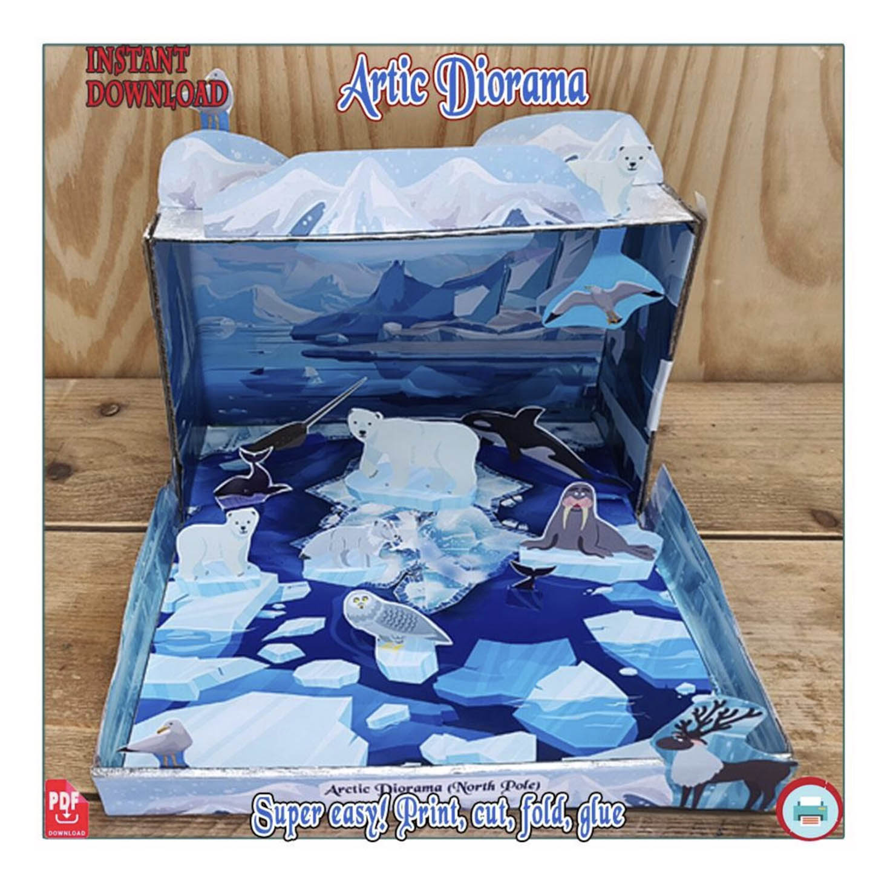
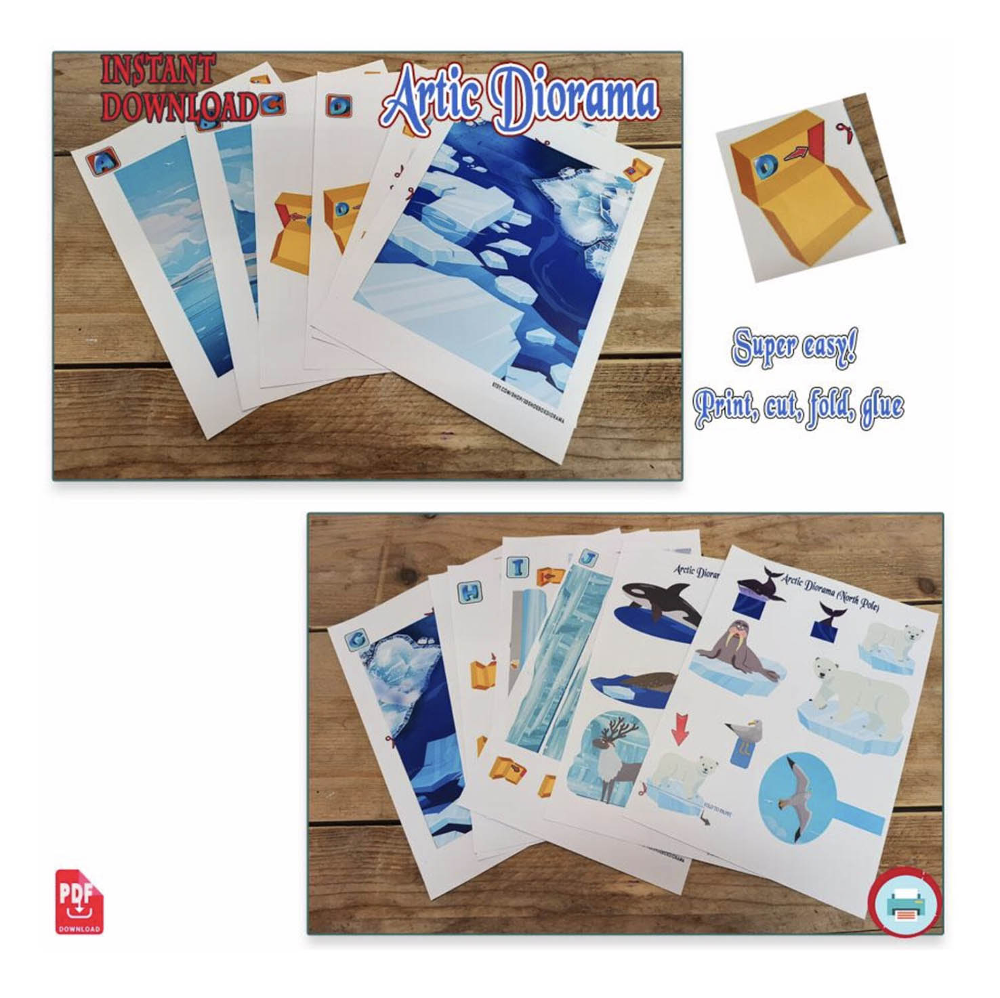
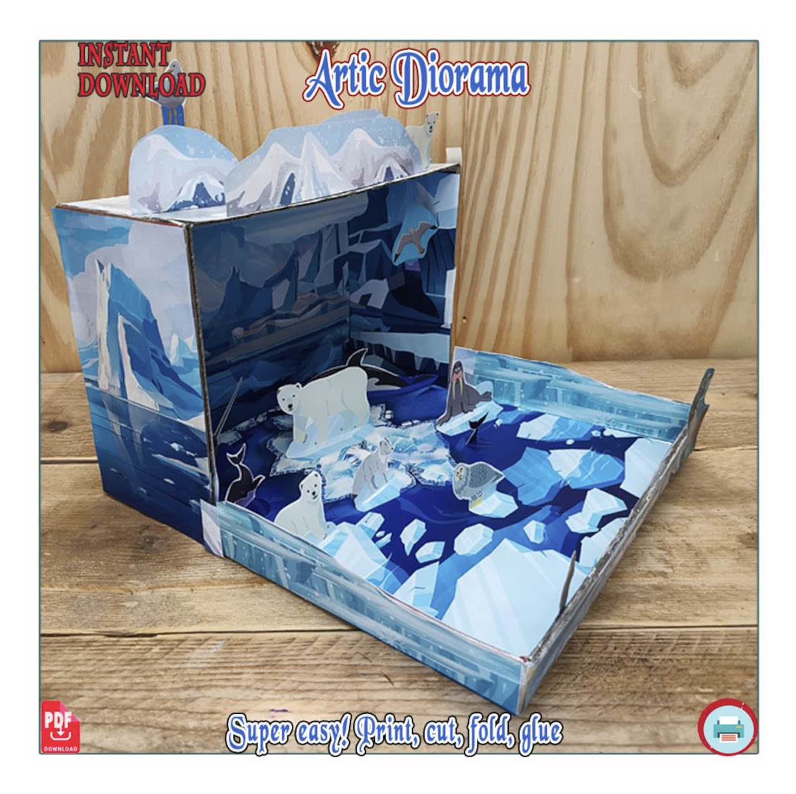
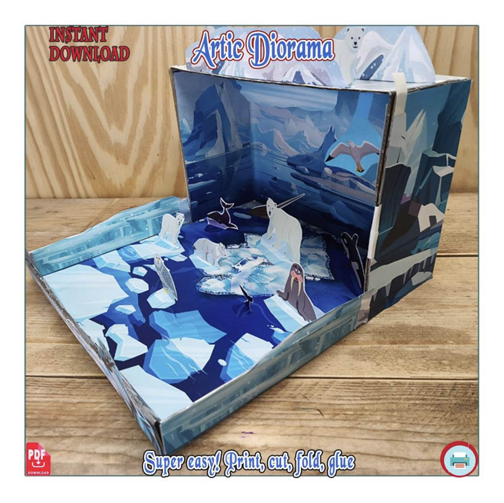

Diorama del Polo Norte para niños
Construye una maqueta del Polo Norte en 3D con animales polares, hielo y paisajes del Ártico. Imprime las piezas, recórtalas y crea una escena educativa dentro de una caja de zapatos.
Es una actividad creativa para aprender sobre el ecosistema del Polo Norte, sus animales y el entorno helado en el que viven.
Ver el proyecto
Una maqueta del Polo Norte llena de animales
Crea una escena polar en 3D con piezas imprimibles de papel. El proyecto combina manualidades, imaginación y aprendizaje sobre la vida en el Ártico.





¿Qué podemos aprender con este diorama polar?
Construir la maqueta ayuda a los niños a observar, investigar y explicar cómo viven los animales en el Polo Norte.
Animales del Polo Norte
Conoce animales como el oso polar, la morsa, la foca, el narval, la orca y diferentes aves polares.
El ecosistema ártico
Observa cómo el hielo, el océano y las bajas temperaturas forman un entorno especial para la vida.
Adaptación al frío
Habla sobre las características que ayudan a los animales polares a sobrevivir en un ambiente helado.
Aprender construyendo
La actividad combina ciencias naturales, creatividad, recortar, doblar y pegar.
¿Qué incluye?
- Archivo digital PDF para imprimir.
- Piezas para construir un diorama polar 3D.
- Animales del Polo Norte para recortar.
- Paisajes de hielo, océano y montañas árticas.
- Plantillas para doblar y pegar.
- Proyecto adecuado para casa o escuela.
Ideal para
- Proyectos escolares sobre el Polo Norte.
- Clases de ciencias naturales.
- Actividades sobre animales polares.
- Manualidades educativas para niños.
- Construir una maqueta en una caja de zapatos.
- Familias que quieren crear y aprender juntas.
¿Cómo hacer la maqueta del Polo Norte?
Solo necesitas una impresora, papel, tijeras, pegamento y una caja de zapatos o cartón para crear la base.
Construye tu propio diorama del Polo Norte
Descarga el PDF, imprime las piezas y crea una maqueta polar llena de animales, hielo y paisajes del Ártico.
$3.49 USD · Pago único · Descarga digital
Ver todas las maquetas